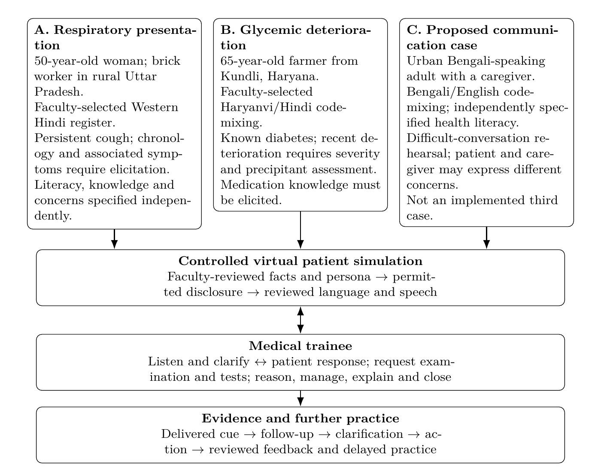

ML4H 2026 submission 396: corrected Figure 1
A note to reviewers
In response to Reviewer 9Vqc, we redrew Figure 1. In the submitted version the three persona cards sat at different heights and several arrows did not reach a box. Now the cards are top-aligned and every arrow runs straight from a box edge into the box below it.
Nothing else changed. The text, abstract and caption are identical to the submission and the paper is still 7 pages. Line breaks near the figure moved slightly because the figure placement changed from [t] to [!t].
- Paper with the corrected figure (PDF)
- Main LaTeX file
- Full LaTeX source (zip), which builds with pdflatex and BibTeX as described in its README
